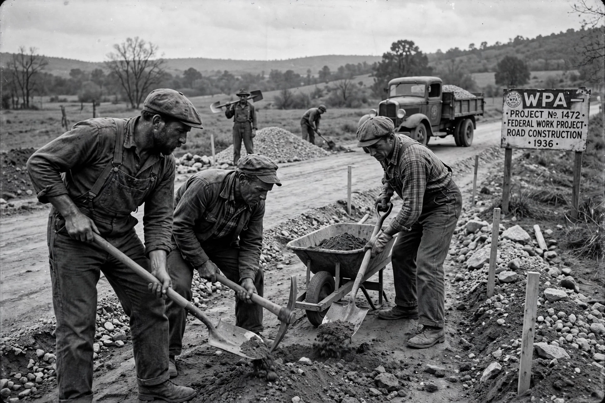

From Wikipedia, the free encyclopedia
| Works Progress Administration | |
|---|---|
 | |
| Formed | 6 May 1935 |
| Dissolved | 30 June 1943 |
| Administrator | Harry Hopkins (1935–1938) |
| Employees | 8.5 million in total; peak 3.3 million (Nov 1938) |
| Parent | New Deal agency; renamed Works Projects Administration in 1939 |
The Works Progress Administration (WPA; renamed in 1939 as the Work Projects Administration) was an American New Deal agency that employed millions of unemployed people (mostly unskilled men, and some women) to carry out public works projects, including the construction of public buildings and roads. It was established on 6 May 1935 by presidential order, as a key part of the Second New Deal.
Under Harry Hopkins, the WPA became the largest and most ambitious American New Deal agency, at its peak employing about 3.3 million people. Its workers built or improved some 650,000 miles of roads, 78,000 bridges, 125,000 public buildings, 800 airports and 700 miles of airport runways, and served over 900 million school lunches. Through Federal Project Number One, the WPA also employed artists, musicians, actors and writers — the Federal Art, Music, Theatre and Writers' Projects — which produced posters, murals, guidebooks and oral histories, including interviews with formerly enslaved people.
Criticised both for waste and for alleged political manipulation, the WPA was wound down as wartime mobilisation ended mass unemployment, and Congress liquidated it on 30 June 1943. In total it had employed about 8.5 million people — roughly a fifth of the American workforce at some point during its existence.
See also: New Deal · Tennessee Valley Authority · Social Security Act